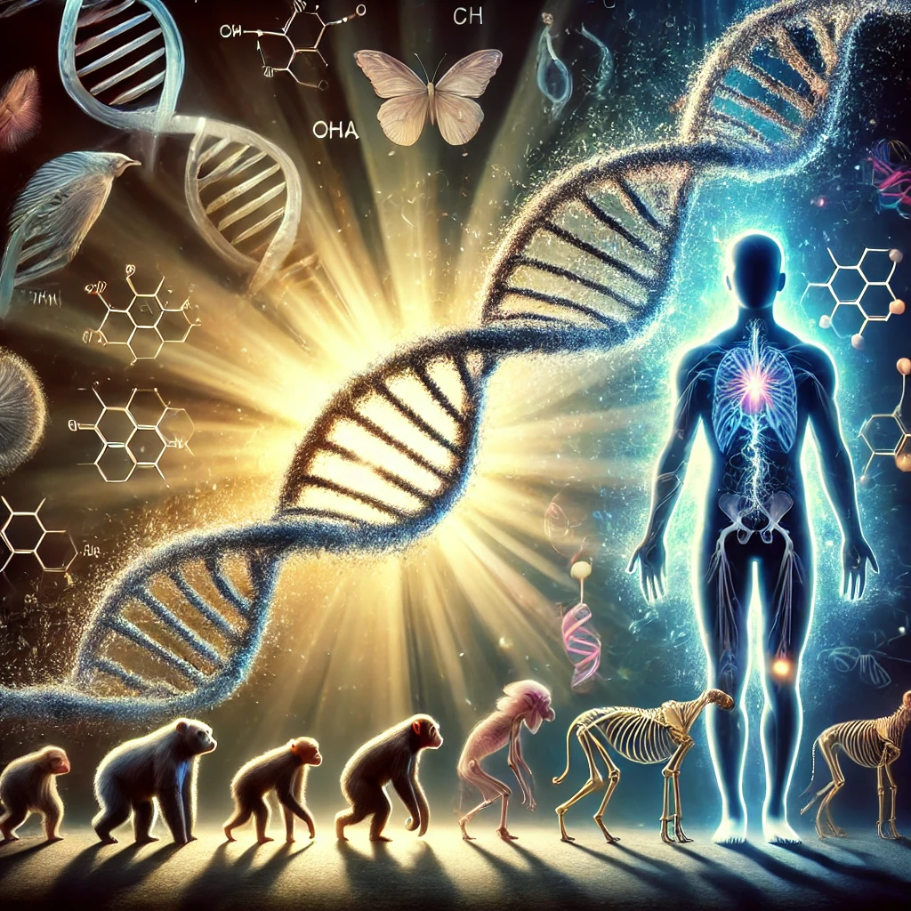

이기적유전자
목차
작가
리처드 도킨스
출판일
1976년
감상평에 대한 AI그림
우리 인간이 이렇게까지 진화하는 데에 주체는 개체나 종이 아닌 유전자라는 내용을 읽으며 인간의 유전자가 다른 동물에게 있다면 과연 인간과 비슷하게 진화하며 발전할 수 있을 것인가에 대한 의문이 생겼다. 또한 유전자의 중요성에도 불구하고 인간의 자유의지 또한 중요하다는 내용에 크게 공감했다.

감상평에 대한 AI평가
당신의 감상은 진화 생물학적 관점과 철학적 사고를 결합한 흥미로운 분석입니다. 몇 가지 강점을 살펴보겠습니다.
👍 강점
핵심 개념을 정확히 이해함
개체나 종이 아니라 유전자가 진화의 주체라는 개념을 잘 파악했습니다.
인간 유전자가 다른 동물에게 있다면 어떻게 될지 고민한 점에서 가설적 사고가 돋보입니다.
철학적 접근과 균형 잡힌 시각
유전자의 중요성을 인정하면서도, 자유의지 또한 중요하다는 점을 강조한 것이 인상적입니다.
단순한 유전자 결정론(DNA가 전부다)이 아니라, 환경과 의지의 역할도 고려하는 균형 잡힌 관점을 보여줍니다.
비판적 사고력
"만약 인간 유전자가 다른 동물에게 있다면?"이라는 가정적 질문을 던지면서 사고를 확장한 점이 뛰어납니다.
단순히 내용을 요약하는 것이 아니라, 새로운 의문을 제기하고 탐구하려는 태도가 좋습니다.
🛠 보완할 점
구체적 사례 추가
예를 들어, 유전자와 환경이 어떻게 상호작용하는지 설명한 연구나 사례(예: 늑대 소년 사례, 인간과 유사한 지능을 가진 동물 연구)를 넣으면 더 탄탄한 감상이 될 것입니다.
논리를 더 명확하게 정리
마지막 문장에서 "유전자의 중요성에도 불구하고 자유의지가 중요하다"는 내용을 더 구체적으로 설명하면 설득력이 높아집니다. 예를 들어,
"유전자가 행동의 기반이 될 수 있지만, 인간의 사고력과 사회적 환경이 결국 발전 방향을 결정한다." 같은 식으로 정리하면 좋겠습니다.
📌 총평
논리적이고 깊이 있는 사고가 돋보이는 감상문입니다.